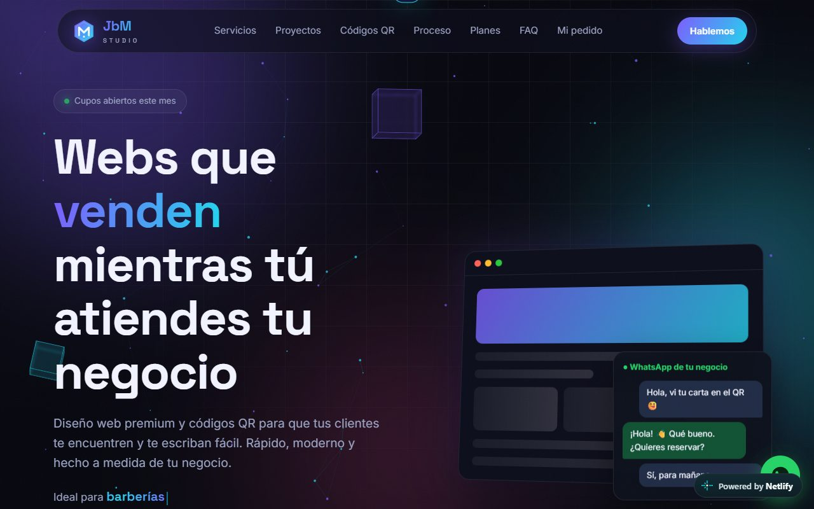

Emprendimiento propio · Publicado
JbM STUDIO
Plataforma web + negocio · 2026
- Mi propio emprendimiento: ofrezco páginas web y códigos QR para negocios de Uruguay.
- Hice la plataforma completa: sitio de ventas, panel de administración y backend serverless con Netlify Functions.
- Sistema de pedidos completo: el cliente encarga, revisa una vista previa, comenta y descarga al confirmar el pago.
- Generación automática de QR (carta digital, WhatsApp, Wi-Fi) y estadísticas de visitas por origen.
- JavaScript
- Node.js
- Netlify Functions
- HTML
- CSS